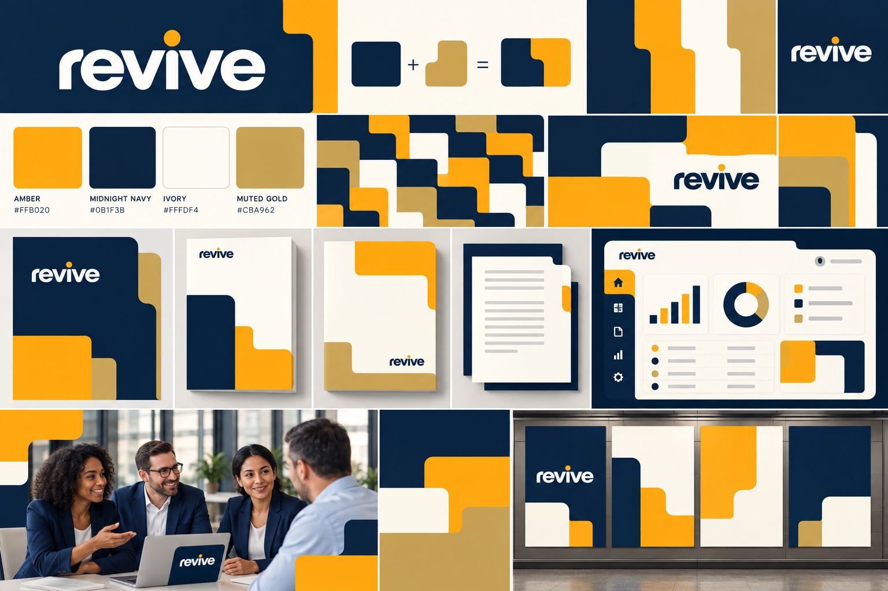
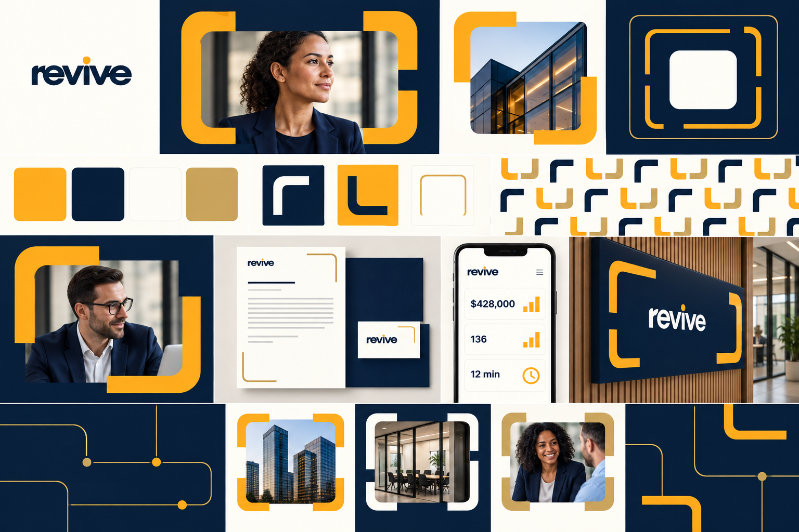
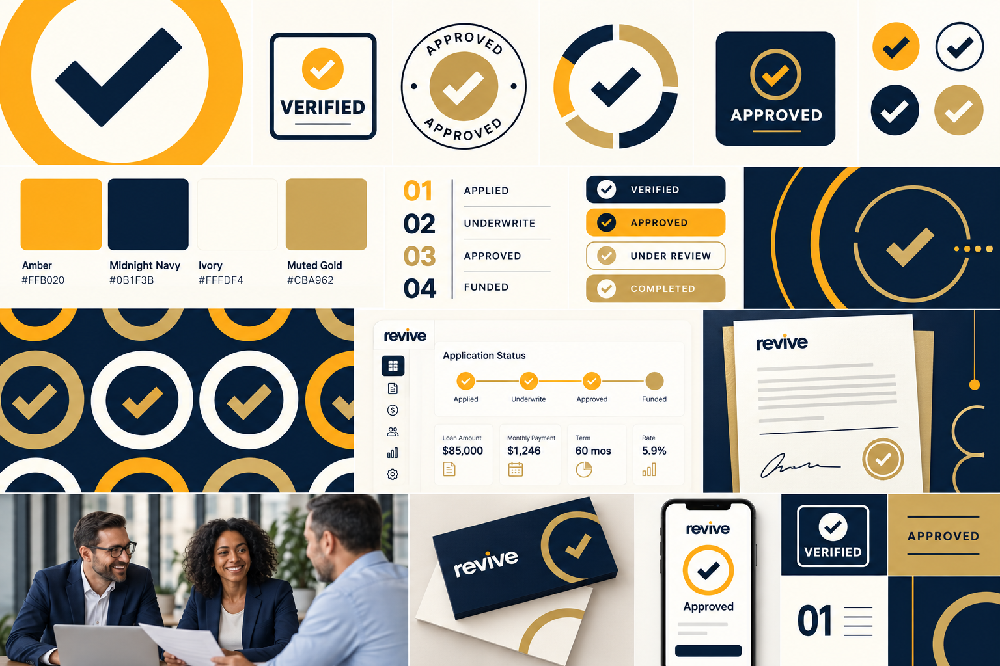

Een helder pad naar financiering
Een eenvoudige beeldtaal van herkenbare symbolen en verbonden stappen maakt de financieringsreis inzichtelijk. Geïnspireerd op Wise’s nadruk op universeel begrijpelijke tekens en een uitgesproken, heldere stijl.
Referentie: Wise — A brand for everywhere

Financiering begint met mensen
Ruime, uitgesproken fotokaders en krachtige kleurvlakken geven de identiteit warmte en energie, terwijl navy en amber de zakelijke betrouwbaarheid bewaren. Geïnspireerd op Monzo’s mensgerichte fotografie en optimistische gebruik van kleur.
Referentie: Monzo — We’ve had a little makeover

Een identiteit opgebouwd uit blokken
Gestapelde modules en verschuivende vlakken vormen een flexibel systeem dat van dashboard tot print en ruimtelijke toepassing meebeweegt. De inspiratie komt uit Stripe’s modulaire productverhalen en aandacht voor duidelijke kleurcontrasten.
Referenties: Stripe Connect — achter de visuele ervaring · Stripe — toegankelijke kleursystemen
